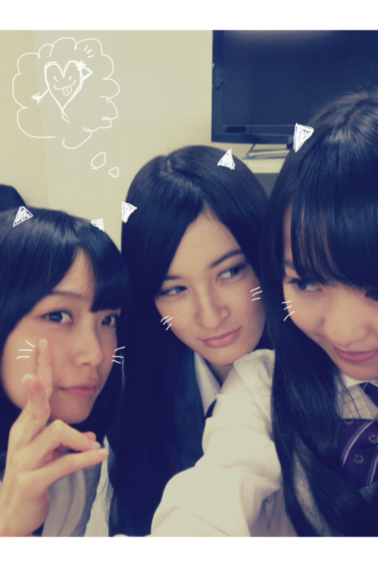
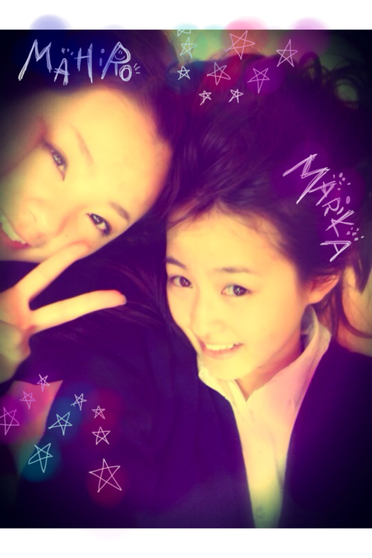

| 2012/02 16 Thu | 77回目*marika |
いつも読んでくださってる方、
初めて読んでくださった方、
コメントしてくださった方、
ありがとうございます☆
まりかです。
前回の記事、しゃしん載せたつもりやったのに
載せてなかった〜><
Lesson終わったあとに
みさとみゅみゅとねねと
ご飯食べました:D!!
ガールズトーク〜♪♪
トゥルルルトゥットゥットゥトゥルル♪
この前ちょとだけ
お仕事前にひめかの家に行って
お話しして、一緒にお昼寝した〜♡ははは
ひめかが寄り添ってきて...
おぉーぅ////
緊張した 笑←
ひめたんなんでそんなにかわいいの。
しゃしん...
まいまい、せっちゃん、私

まいまいぴーす＊
せっちゃんが私のこと見つめてきた。
「変なしゃしん!!」
とか言わないのっっ
せっちゃんと最近よくメールするの^^
うん。
私よりおちゃらけてると思う笑
笑い方おもしろい。
目が合うと笑ってしまう 笑
まひろー:D

まひろにちんげんさいって言われる。
意味がよう分からんから
私もはくさいって言い返してる。
:3
お菓子を消費するためにLesson前に
まひろとキッズダンスのまねしながら
激しく踊るのが日課になる。
そこにはいこまちゃんが参戦する 笑
いこまちゃんと格闘技しながら
おしりぺんぺんしてる。
ときどきまひろを参加させる
れながこれ見ていっつも笑ってるんよ。
,,,,,
おもしろい... :3??
いっつもこんなんなのよ。
あはは楽しい楽しい:D
あと今ねねの体育座りにはまってます。
めちゃくちゃかわいい←
乃木メン楽しい♡
乃木坂46充実っ
みんなだいすきー♡
＊＊＊
最近質問をお答えしていなくて
本当にすみませんx(
コメントありがとうございます*
いつも読み返しています!!
Lesson後に読むことが多いのですが
めっちゃ元気になります＊
疲れてるのに読んでたら
すっごいうれしくて、うずうず笑ってしまう><
みなさんも、
「自分のペースでいいよ」
と言ってくださるので、
自分ペースで質問を返して行きます^^/
みなさんとてもあったかいの。
だいすきです ♡♡
てれてれ//
では!!
全員で撮影があるので
頑張ってくる ☆☆
最近わかれてお仕事することが多いので
全員ってすごいうれしいの^^
一日お疲れさまりかです＊＊
今日も元気に頑張りまりか↑
風邪ひかないように
手洗いうがいっっっっっ


ベビたん*****bA by marika